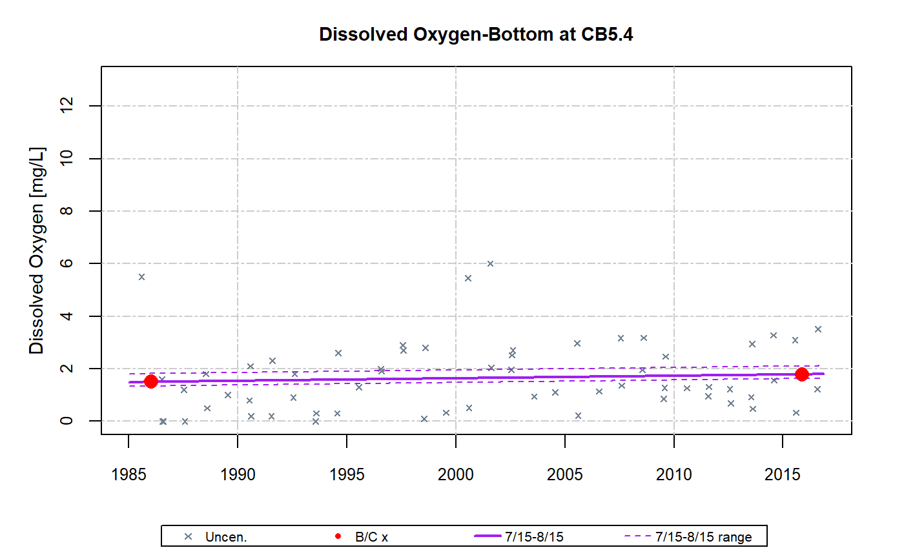

Perform GAM analysis. Relies on mgcv::gam to perform general additive model.
gam
The baseDay function has been added to this package from the smwrBase package.
gamTest( df, dep, stat, layer = NA, analySpec, gamTable = TRUE, gamPlot = 10, gamDiffModel = NA, flow.detrended = NA, salinity.detrended = NA )
Arguments
| df | data frame |
|---|---|
| dep | dependent variable |
| stat | station |
| layer | layer |
| analySpec | analytical specifications |
| gamTable | gam table setting (set to FALSE to turn off table output) |
| gamPlot | gam plot setting (set to FALSE to turn off plotting) |
| gamDiffModel | GAM model(s) used for computing differences on sub-annual/multi-period basis |
| flow.detrended | data generated by detrended.flow. Default = NA. |
| salinity.detrended | data generated by detrended.flow. Default = NA. |
Value
Returns a list with results
stat.gam.result -- Data frame with summary results in a tabular format suitable for output to a csv file
chng.gam.result -- Data frame with estimate of change for sub-annual differences based on the settings specified in
gamDiffModel. Includes all data from stat.gam.result and sub-annual estimates of change in a tabular format suitable for output to a csv file.data -- Data frame of data used in analysis (for example years with large proportion of censored data might be removed from the analysis and not included in this data frame)
data.all -- Data frame of all potential data available for analysis
iSpec -- List of baytrends analysis settings used for a specific analysis of station and parameter
gamOutput0 -- Results including model predictions for gam formula 0 (i.e., gam0)
gamOutput1 -- Results including model predictions for gam formula 1 (i.e., gam1)
gamOutput2 -- Results including model predictions for gam formula 2 (i.e., gam2)
gamOutput3 -- Results including model predictions for gam formula 3 (i.e., gam3)
gamOutput4 -- Results including model predictions for gam formula 4 (i.e., gam4)
gamOutput5 -- Results including model predictions for gam formula 5 (i.e., gam5)
gamOutput6 -- Results including model predictions for gam formula 6 (i.e., gam6)
gamOutput* -- For each evaluated model, gamOutput* (see above
element list) is a list with the following elements:
gamOption -- gam formula ID, i.e., 0, 1, 2, 3, 4 , 5, 6 corresponding to gam0, gam1, gam2, etc.
gamRslt -- mgcv::gam output
gamRsltSum -- "summary" of mgcv::gam, i.e., summary(mgcv::gam)
gamANOVAtbl -- GAM Analysis of Variance table
gamCoefftbl -- GAM Parameter Coefficients table
gamDiagnostics -- GAM Diagnostics table(AIC, RMSE, and Adj. R-squared)
perChange -- Estimates of Change table
porDiff.regular -- Estimate of change in list format
porDiff.adjusted -- Estimate of change adjusted for interventions in list format
predictions -- Data frame of gam predictions (all information used to create baytrends graphics excluding measurements)
Details
Set gamPlot=FALSE to turn off plotting. Computing the information
("predictions") to create plots is one of the more time consumings aspects of
the gamTest function. Setting gamPlot=FALSE turns off these
computations and speeds up gamTest. The disadvantage is that no
predictions are returned; however, the tabularized results stored in
stat.gam.result and, if requested, chng.gam.result are still
returned.
Setting gamPlot to a value between 1-30 changes the resolution of the
resulting figure by setting the interval on which the prediction data set is
made. By default gamPlot is set to 10. That is, a prediction is made
every 10th day, or about 36 predictions per year. Values closer to 1 result
in larger returned prediction data sets and take more computation time.
Values closer to 30 result in smaller returned data sets and take less
computation time. Although there is no change in the fitted model, values
closer to 30 may have slight degraded figure quality if there is subtantial
seasonality in the fitted model since the seasonal minimum and maximum might
not be included in the prediction data set and therefore not plotted. Values
greater than 30 are treated as 30. Setting gamPlot=30 might be
advantangeous when the analysis only requires cursory figure examination.
Setting gamTable=FALSE will turn off table output to the console. This
may be advantageous to reduce the amount of output. Since these computations
do not significantly affect gamTest run time, the standard Analysis of
Variance, GAM Parameter Coefficients, Diagnostics, and Estimates of Change
tables are returned from gamTest regardless of the gamTable
setting. Many of the values from these tables are also returned as part of
tabularized stat.gam.result.
The default settings for gamDiffModel (i.e., gamDiffModel=NA)
will not result in sub-annual (i.e., seasonal) differences being computed. In
this default setting, the returned chng.gam.result that is returned
from gamTest will be empty. If gamDiffModel is a value (i.e.,
not NA), then chng.gam.result will include one row for each
combination of years specified in analySpec$gamDiffPeriods, seasons
specified in analySpec$gamDiffSeason, and the number of models listed
in gamDiffModel. For example gamDiffModel=c(0,1,2) would
result in sub-annual being computed for gam0, gam1, and gam2.
Flow and Salinity Adjustments (gam4). It is necessary to create and
pass properly formatted data via the flow.detrended and
salinity.detrended arguments to evaluate gam4 models. See
detrended.flow and detrended.salinity for more
information on how to create properly formatted data.
Examples
# Specify parameter and station to analyze dep <- 'do' stat <- 'CB5.4' layer <- 'B' # Prepare data and set up specifications for analysis dfr <- analysisOrganizeData (dataCensored)#> #> #> #> #> #> ### Record Count #> #> #> #> #> `Beginning Number of Records: 13062` #> #> #> #> `Number of Records After Processing: 13062` #> #> #> #> #> ### Parameters #> #> #> #> #> *Table: List of Parameters.* #> #> #> #> #> #> Dep. Var. Parameter Name Units Log Tran. GAM Dep. Var. #> --------- ---------------------------- ----- --------- ------------- #> secchi Secchi Depth m FALSE secchi #> chla Chlorophyll a (Corrected) ug/L TRUE lnchla #> do Dissolved Oxygen mg/L FALSE do #> tn Total Nitrogen mg/L TRUE lntn #> tp Total Phosphorus mg/L TRUE lntp #> po4 Orthophosphorus mg/L TRUE lnpo4 #> tdp Total Dissolved Phosphorus mg/L TRUE lntdp #> no23 Nitrite + Nitrate mg/L TRUE lnno23 #> nh4 Ammonium mg/L TRUE lnnh4 #> tdn Total Dissolved Nitrogen mg/L TRUE lntdn #> din Dissolved Inorganic Nitrogen mg/L TRUE lndin #> salinity Salinity ppt FALSE salinity #> tss Total Suspended Solids mg/L TRUE lntss #> wtemp Water Temperature deg C FALSE wtemp #> #> ### Layers #> #> #> #> #> *Table: List of Layers.* #> #> #> #> #> #> Layer ID Layer Name #> -------- ---------------- #> S Surface #> AP Above Pycnocline #> BP Below Pycnocline #> B Bottom #> #> ### Models #> #> #> #> #> *Table: List of Models.* #> #> #> #> #> #> Option Model #> ------ ---------------------------------------------- #> 0 Linear Trend with Seasonality #> 1 Non-linear Trend with Seasonality #> 2 Non-linear trend with Seas+Int #> 3 Non-linear trend with Seas+Int. & Intervention #> 4 Non-linear trend with Seas+Int. & Hydro Adj #> #> ## #> #> ### Stations #> #> #> #> #> *Table: List of Stations.* #> #> #> #> #> #> Station ID Latitude Longitude CB 92 Seg. Flow Adj. Gage Mth. Group #> ---------- -------- --------- ---------- -------------- ---------- #> CB3.3C 38.9960 -76.3597 CB3MH 01578310 MD-Main #> CB4.1C 38.8259 -76.3995 CB4MH 01578310 MD-Main #> CB5.4 37.8001 -76.1747 CB5MH_VA 01578310 VA-All #> TF5.5 37.3126 -77.2328 JMSTF1 02035000 VA-All #> EE2.1 38.6549 -76.2643 CHOMH1 01491000 MD-Trib #> EE3.0 38.2809 -76.0103 FSBMH 01578310 MD-Trib #> TF2.2 38.6907 -77.1111 POTTF_MD 01646500 MD-Potomac #> LE2.2 38.1576 -76.5980 POTMH_MD 01646500 MD-Potomacdf <- dfr[[1]] analySpec <- dfr[[2]] # Apply gamTest gamResult <- gamTest(df, dep, stat, layer, analySpec=analySpec)#> Warning: Detrended flow data (flow.detrended) not passed as argument in gamTest, but models included in analySpec include those with 'flw_sal' term. Consider passing detrended flow data or reducing models specified in analySpec.#> Warning: Detrended salinity data (salinity.detrended) not passed as argument in gamTest, but models included in analySpec include those with 'flw_sal' term. Consider passing detrended salinity data or reducing models specified in analySpec.#> Warning: A methods list (methodsList) does not exist in Global environment; however, models included in analySpec include an intervention term. Consider creating a methods list or reducing models specified in analySpec.#> #> #### Dissolved Oxygen - Linear Trend with Seasonality#> #> #> #> #> *Table: GAM Analysis of Variance.* #> #> #> #> #> #> |Type | Source| edf| F-stat| p-value| #> |:----------------|------:|----:|--------:|-------:| #> |parametric terms | cyear| 1.00| 2.4355| 0.1193| #> |smoothed terms | s(doy)| 5.96| 392.4418| <0.0001| #> #> #> #> #> *Table: GAM Parameter Coefficients.* #> #> #> #> #> #> |Parameter | Estimate| Std. Err.| t value| p-value| #> |:-----------|--------:|---------:|-------:|-------:| #> |(Intercept) | 5.548336| 0.058309| 95.1532| <0.0001| #> |cyear | 0.009617| 0.006162| 1.5606| 0.1193| #> #> #> #> #> *Table: GAM Diagnostics.* #> #> #> #> #> #> | AIC| RMSE| Adj. R-squared| #> |------:|------:|--------------:| #> | 1534.9| 1.2471| 0.8718| #> #> #> #> #> *Table: Estimates of Change from 1985-2016.* #> #> #> #> #> #> |Calculation | Estimate | #> |:--------------------------------------------|:------------------:| #> |Baseline mean | 6.2605 | #> |Current mean | 6.549 | #> |Estimated difference | 0.2885 | #> |Std. Err. difference | 0.1849 | #> |95% Confidence interval for difference | (-0.0738 , 0.6508) | #> |Difference p-value | 0.1193 | #> |Period of Record Percent Change Estimate (%) | 4.61% | #> #> #### Dissolved Oxygen - Non-linear Trend with Seasonality#> #> #> #> #> *Table: GAM Analysis of Variance.* #> #> #> #> #> #> |Type | Source| edf| F-stat| p-value| #> |:----------------|--------:|-----:|--------:|-------:| #> |parametric terms | cyear| 1.00| 0.0396| 0.8424| #> |smoothed terms | s(cyear)| 14.07| 2.4102| 0.0014| #> |" " | s(doy)| 6.09| 417.6924| <0.0001| #> #> #> #> #> *Table: GAM Parameter Coefficients.* #> #> #> #> #> #> |Parameter | Estimate| Std. Err.| t value| p-value| #> |:-----------|---------:|---------:|-------:|-------:| #> |(Intercept) | 5.467504| 0.352441| 15.5132| <0.0001| #> |cyear | -0.057488| 0.289014| -0.1989| 0.8424| #> #> #> #> #> *Table: GAM Diagnostics.* #> #> #> #> #> #> | AIC| RMSE| Adj. R-squared| #> |-------:|------:|--------------:| #> | 1515.53| 1.2036| 0.8806| #> #> #> #> #> *Table: Estimates of Change from 1985-2016.* #> #> #> #> #> #> |Calculation | Estimate | #> |:--------------------------------------------|:------------------:| #> |Baseline mean | 6.4261 | #> |Current mean | 6.5415 | #> |Estimated difference | 0.1153 | #> |Std. Err. difference | 0.2909 | #> |95% Confidence interval for difference | (-0.4549 , 0.6855) | #> |Difference p-value | 0.6920 | #> |Period of Record Percent Change Estimate (%) | 1.79% | #> #> #### Dissolved Oxygen - Non-linear trend with Seas+Int#> #> #> #> #> *Table: GAM Analysis of Variance.* #> #> #> #> #> #> |Type | Source| edf| F-stat| p-value| #> |:----------------|-------------:|-----:|--------:|-------:| #> |parametric terms | cyear| 1.00| 0.0358| 0.8501| #> |smoothed terms | s(cyear)| 14.18| 2.4300| 0.0012| #> |" " | s(doy)| 6.05| 419.4249| <0.0001| #> |" " | ti(cyear,doy)| 1.17| 0.1529| 0.1797| #> #> #> #> #> *Table: GAM Parameter Coefficients.* #> #> #> #> #> #> |Parameter | Estimate| Std. Err.| t value| p-value| #> |:-----------|---------:|---------:|-------:|-------:| #> |(Intercept) | 5.471567| 0.355158| 15.4060| <0.0001| #> |cyear | -0.055102| 0.291314| -0.1892| 0.8501| #> #> #> #> #> *Table: GAM Diagnostics.* #> #> #> #> #> #> | AIC| RMSE| Adj. R-squared| #> |-------:|-----:|--------------:| #> | 1514.72| 1.201| 0.8811| #> #> #> #> #> *Table: Estimates of Change from 1985-2016.* #> #> #> #> #> #> |Calculation | Estimate | #> |:--------------------------------------------|:------------------:| #> |Baseline mean | 6.4296 | #> |Current mean | 6.5403 | #> |Estimated difference | 0.1107 | #> |Std. Err. difference | 0.2906 | #> |95% Confidence interval for difference | (-0.4589 , 0.6803) | #> |Difference p-value | 0.7034 | #> |Period of Record Percent Change Estimate (%) | 1.72% |gamPlotDisp(gamResult = gamResult, analySpec = analySpec, fullModel = 2, seasAvgModel = 2, seasonalModel = 2, diffType = "regular", obserPlot = TRUE, interventionPlot = TRUE, seasAvgPlot = TRUE, seasAvgConfIntPlot = FALSE, seasAvgSigPlot = FALSE, fullModelPlot = TRUE, seasModelPlot = TRUE, BaseCurrentMeanPlot = FALSE, adjustedPlot = FALSE)# Apply gamTestSeason gamResult2 <- gamTestSeason(df, dep, stat, layer, analySpec=analySpec, gamSeasonPlot = c("7/15-8/15", "purple", "range"))#> Warning: Detrended flow data (flow.detrended) not passed as argument in gamTest, but models included in analySpec include those with 'flw_sal' term. Consider passing detrended flow data or reducing models specified in analySpec.#> Warning: Detrended salinity data (salinity.detrended) not passed as argument in gamTest, but models included in analySpec include those with 'flw_sal' term. Consider passing detrended salinity data or reducing models specified in analySpec.#> Warning: A methods list (methodsList) does not exist in Global environment; however, models included in analySpec include an intervention term. Consider creating a methods list or reducing models specified in analySpec.#> #> #### Dissolved Oxygen - Linear Trend with Seasonality#> #> #> #> #> *Table: GAM Analysis of Variance.* #> #> #> #> #> #> |Type | Source| edf| F-stat| p-value| #> |:----------------|------:|----:|--------:|-------:| #> |parametric terms | cyear| 1.00| 2.4355| 0.1193| #> |smoothed terms | s(doy)| 5.96| 392.4418| <0.0001| #> #> #> #> #> *Table: GAM Parameter Coefficients.* #> #> #> #> #> #> |Parameter | Estimate| Std. Err.| t value| p-value| #> |:-----------|--------:|---------:|-------:|-------:| #> |(Intercept) | 5.548336| 0.058309| 95.1532| <0.0001| #> |cyear | 0.009617| 0.006162| 1.5606| 0.1193| #> #> #> #> #> *Table: GAM Diagnostics.* #> #> #> #> #> #> | AIC| RMSE| Adj. R-squared| #> |------:|------:|--------------:| #> | 1534.9| 1.2471| 0.8718| #> #> #> #> #> *Table: Estimates of Change (season: 7/15-8/15) from 1985-2016.* #> #> #> #> #> #> |Calculation | Estimate | #> |:--------------------------------------------|:------------------:| #> |Baseline mean | 1.5004 | #> |Current mean | 1.7889 | #> |Estimated difference | 0.2885 | #> |Std. Err. difference | 0.1849 | #> |95% Confidence interval for difference | (-0.0738 , 0.6508) | #> |Difference p-value | 0.1193 | #> |Period of Record Percent Change Estimate (%) | 19.23% | #> #> #### Dissolved Oxygen - Non-linear Trend with Seasonality#> #> #> #> #> *Table: GAM Analysis of Variance.* #> #> #> #> #> #> |Type | Source| edf| F-stat| p-value| #> |:----------------|--------:|-----:|--------:|-------:| #> |parametric terms | cyear| 1.00| 0.0396| 0.8424| #> |smoothed terms | s(cyear)| 14.07| 2.4102| 0.0014| #> |" " | s(doy)| 6.09| 417.6924| <0.0001| #> #> #> #> #> *Table: GAM Parameter Coefficients.* #> #> #> #> #> #> |Parameter | Estimate| Std. Err.| t value| p-value| #> |:-----------|---------:|---------:|-------:|-------:| #> |(Intercept) | 5.467504| 0.352441| 15.5132| <0.0001| #> |cyear | -0.057488| 0.289014| -0.1989| 0.8424| #> #> #> #> #> *Table: GAM Diagnostics.* #> #> #> #> #> #> | AIC| RMSE| Adj. R-squared| #> |-------:|------:|--------------:| #> | 1515.53| 1.2036| 0.8806| #> #> #> #> #> *Table: Estimates of Change (season: 7/15-8/15) from 1985-2016.* #> #> #> #> #> #> |Calculation | Estimate | #> |:--------------------------------------------|:-----------------:| #> |Baseline mean | 1.6362 | #> |Current mean | 1.764 | #> |Estimated difference | 0.1278 | #> |Std. Err. difference | 0.295 | #> |95% Confidence interval for difference | (-0.4503 , 0.706) | #> |Difference p-value | 0.6650 | #> |Period of Record Percent Change Estimate (%) | 7.81% | #> #> #### Dissolved Oxygen - Non-linear trend with Seas+Int#> #> #> #> #> *Table: GAM Analysis of Variance.* #> #> #> #> #> #> |Type | Source| edf| F-stat| p-value| #> |:----------------|-------------:|-----:|--------:|-------:| #> |parametric terms | cyear| 1.00| 0.0358| 0.8501| #> |smoothed terms | s(cyear)| 14.18| 2.4300| 0.0012| #> |" " | s(doy)| 6.05| 419.4249| <0.0001| #> |" " | ti(cyear,doy)| 1.17| 0.1529| 0.1797| #> #> #> #> #> *Table: GAM Parameter Coefficients.* #> #> #> #> #> #> |Parameter | Estimate| Std. Err.| t value| p-value| #> |:-----------|---------:|---------:|-------:|-------:| #> |(Intercept) | 5.471567| 0.355158| 15.4060| <0.0001| #> |cyear | -0.055102| 0.291314| -0.1892| 0.8501| #> #> #> #> #> *Table: GAM Diagnostics.* #> #> #> #> #> #> | AIC| RMSE| Adj. R-squared| #> |-------:|-----:|--------------:| #> | 1514.72| 1.201| 0.8811| #> #> #> #> #> *Table: Estimates of Change (season: 7/15-8/15) from 1985-2016.* #> #> #> #> #> #> |Calculation | Estimate | #> |:--------------------------------------------|:------------------:| #> |Baseline mean | 1.6308 | #> |Current mean | 1.7624 | #> |Estimated difference | 0.1316 | #> |Std. Err. difference | 0.2982 | #> |95% Confidence interval for difference | (-0.4529 , 0.7161) | #> |Difference p-value | 0.6593 | #> |Period of Record Percent Change Estimate (%) | 8.07% |gamPlotDispSeason(gamResult = gamResult2, analySpec = analySpec, fullModel = 2, seasAvgModel = 2, seasonalModel = 2, diffType = "regular", obserPlot = TRUE, interventionPlot = TRUE, seasAvgPlot = TRUE, seasAvgConfIntPlot = FALSE, seasAvgSigPlot = FALSE, fullModelPlot = FALSE, seasModelPlot = FALSE, BaseCurrentMeanPlot = TRUE, adjustedPlot = FALSE, gamSeasonFocus = TRUE)